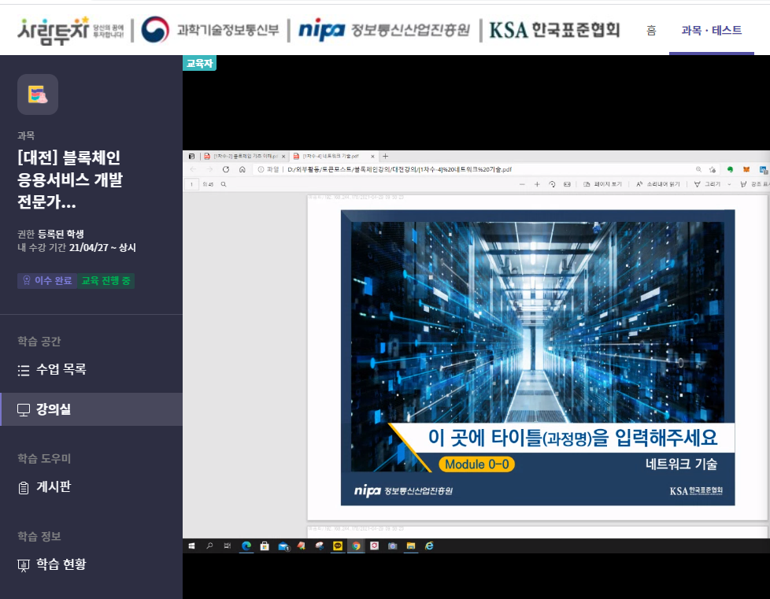

블록체인을 이용한 IoT 보안 프로젝트
개요
마켓앤마켓이 최근 발표한 ‘IoT 솔류션 및 서비스 시장’보고서에 따르면
전 세계 IoT 솔루션과 서비스 시장은 2024년까지 14.9%의 연평균복합성장률을
기록하며 상승세를 유지할 거라 예측했다. 그에따라 2025년까지 사물인터넷
연결 수가 약 250억 개에 달할 것으로 추정했으며, IoT수가 늘어남에 따라
현재진행형으로 IoT플랫폼에 대한 보안문제는 지속적으로 이슈되고 있다.
허가된 사용자가 아닌 불법사용자가 도청, 데이터변형, 원격조작 등과 같은
문제들이 발생한다. Private 블록체인을 통해 인증된 사용자만이 접근할 수 있도록 하는 방법이 대안으로 나오고 있다.
개발 계획
스마트팩토리의 IIoT기기를 Private블록체인을 통해 인증된 사용자만 접근할 수 있도록 하여
정상적인 동작을 방해하는 공격을 막을 수 있도록 하고,
블록체인을 이용한 네트워크 구성으로 해킹으로 인한 데이터의 위·변조를 막을 수 있도록 목표를 설정하여 개발을 진행 한다.
하나의 블록체인 네트워크 안의 연결된 사용자들로만 블록체인 구성원으로 인정하는 것을 가장 큰 특징으로 한다. 외부 네트워크에서 접근하는 사용자들은 접근이 불가능하고, 데이터의 위·변조를 불가능 하게 하여 보안성을 높이는 것을 목표로 개발을 진행 한다.
하이퍼레저 블록체인 영상
하이퍼레저 블록체인을 활용한 iot보안 프로젝트 진행중
진행 현황
현재 블록체인 응용서비스 개발 전문가 과정 강의를 수강하고 있으며 수일 내에 파트를 나눠 모바일 어플리케이션 , 블록체인 서버 개발을 할 예정입니다.
